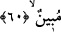
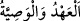

olan soldan gelmesi, münâfığın bu grupların en zayıfı olması sebebiyledir. Nitekim sol
sağdan daha zayıftır. İşte bu yüzden münâfık cehennemin en alt katında olacaktır (bk. en-
Nisâ, 4/145). Kitabı sol tarafından verilecektir. Muattıla (ateiste) arka tarafından
gelmesi, arka taraf nazar mahalli olmadığı içindir. Şeytan ona ‘Öyle bir şey yoktur’ der.
İşte bu dört mertebe, dört gruba âiddir. Cehennemin kapılarından her bir kapıdan
onlara bir cüz ayrılmıştır. Bunlar onların azap menzilleridir. Bu dört mertebe
cehennemin yedi kapısıyla çarpılınca, ortaya ayın ve diğer gezegenlerin menzilleri
sayısınca yirmi sekiz menzil çıkar.”
60. “Ey Âdem oğulları! Size şeytana tapmayın, çünkü o sizin apaçık bir
düşmanınızdır.” demedim mi?
Bu âyet, mücrimlerin mü’minlerden ayrılmaları emri ve Allah Teâlâ’nın “İnkârınız
sebebiyle bugün oraya girin.” (Yâsîn, 36/64) kavliyle ceheneme girme emri arasında
kıyamet günü azarlama, susturma ve paylama yoluyla mücrimlere söylenenler
cümlesindendir.
“Ey Âdemoğulları! Size şeytana tapmayın,” yani, şeytanın emriyle putlara “çünkü o
sizin” size düşmanlığı “apaçık bir düşmanınızdır” sizi fıtratınızdan ve mükellef
tutulduğunuz hizmetten alıkoyup engellemek ister “demedim mi?” size şeytana ibâdeti
terk konusunda and vermedim mi, emretmedim mi? Yani, size and verdim ve emrettim.
“__WORD__ (Ahd ve vasiyet)” hayırlı ve faydalı bir işe önceden teşebbüs etmektir.
Burada ahidden murad Allah Teâlâ’nın peygamberlerin lisanıyla onları mükellef kıldığı
emirler ve yasaklardır. “Ey Âdem oğulları! Şeytan, ana-babanızı, ayıp yerlerini
kendilerine göstermek için elbiselerini soyarak cennetten çıkardığı gibi sizi de
aldatmasın...” (el-A’râf, 7/27) ve “Sakın şeytanın peşinden gitmeyin. Çünkü o,
apaçık düşmanınızdır.” (el-Bakara, 2/208) âyetleri ve bu mânâya gelen diğer âyetler
bu emir ve yasaklar cümlesindendir.
Burada “Âdemoğulları” ile mücrimler/günahkârlar kasdedilmiştir. “İşte bu,
suçluların yalanladıkları cehennemdir.” (er-Rahmân, 55/43) âyetinde olduğu gibi
aşağıda gelen hitaplar ile kastedilen de aynıdır.
Şeytana ibâdet etmekten maksad Allah’tan başkasına ibâdet etmektir. Çünkü hiç kimse
doğrudan şeytana ibâdet etmez. Şimdiye kadar hiç kimsenin şeytana ibâdet ettiği rivâyet
edilmemiştir. Ancak Allah’tan başkasına ibâdet etmek, şeytanın emriyle, süslemesiyle,
ayartarak ve vesvese vererek çağırdığına boyun eğmekle olduğundan buna şeytana
tapmak denilmiştir. Dolayısıyla şeytana itâat etmek ve boyun eğmek, bunların her biri